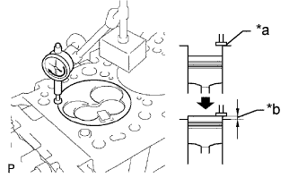
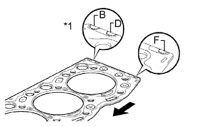
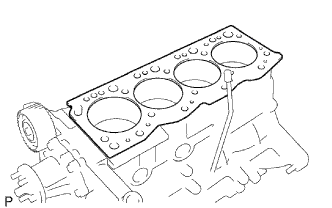
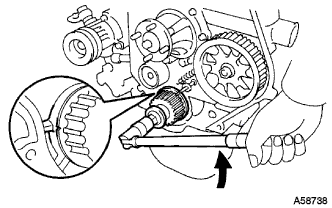
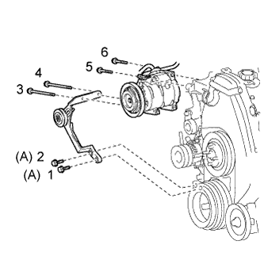

ПРОКЛАДКА ГОЛОВКИ БЛОКА ЦИЛИНДРОВ > УСТАНОВКА |
| 1. INSTALL CYLINDER HEAD GASKET |
Check the piston protrusion for each cylinder.
|  |
Find where the piston head protrudes most by slowly turning the crankshaft clockwise and counterclockwise.
| *a | Measuring Tip |
| *b | Protrusion |
 |
Measure the protrusion of each cylinder at 2 places as shown in the illustration, making a total of 8 measurements.
| *a | Measuring Point |
 | Front |
For the piston protrusion value of each cylinder, use the average of the 2 measurements of that cylinder.
|  |
Select a new cylinder head gasket.
| *1 | Cutout Mark |
| Front |
| Item | Specified Condition |
| Mark B | 1.40 to 1.50 mm (0.0551 to 0.0591 in.) |
| Mark D | 1.50 to 1.60 mm (0.0591 to 0.0630 in.) |
| Mark F | 1.60 to 1.70 mm (0.0630 to 0.0669 in.) |
Select the largest piston protrusion value from the measurements made, then select a new appropriate gasket according to the table below.
| Piston Protrusion | Gasket Size |
| 0.68 to 0.78 mm (0.0268 to 0.0307 in.) | Use B |
| 0.78 to 0.88 mm (0.0307 to 0.0346 in.) | Use D |
| 0.88 to 0.98 mm (0.0346 to 0.0385 in.) | Use F |
|  |
Install the selected cylinder head gasket to the cylinder block.
| 2. INSTALL CYLINDER HEAD SUB-ASSEMBLY |
|  |
Using the crankshaft pulley bolt, turn the crankshaft 90° counterclockwise, and align the timing mark of the crankshaft timing pulley with the protrusion of the timing belt case.
| Turn |
Place the cylinder head on the cylinder block.
Install the plate washers to the cylinder head bolts.
Apply a light coat of engine oil to the threads and under the heads of the cylinder head bolts.
Step 1:
 |
Install and uniformly tighten the 18 cylinder head bolts, in several steps, in the sequence shown in the illustrations.
| Item | Length |
| Bolt A | 107 mm (4.21 in.) |
| Bolt B | 127 mm (5.00 in.) |
Step 2:
Mark the front side of each cylinder head bolt head with paint.
Tighten the cylinder head bolts 90° in the sequence shown in step 1.
Step 3:
Tighten the cylinder head bolts another 90° in the sequence shown in step 1.
Check that the paint marks are now at a 180° angle to the front.
| 3. INSTALL CYLINDER HEAD COVER SUB-ASSEMBLY |
Remove the 9 bolts, nut, cylinder head cover and gasket.
| 4. INSTALL WIRING HARNESS CLAMP BRACKET (for LHD) |
Install the wiring harness clamp bracket with the bolt.
| 5. CONNECT WIRE HARNESS |
Connect the engine wire and install the No. 2 glow plug resistor insulator and washer with the nut.
| *1 | Nut |
| *2 | Washer |
| *3 | No. 2 Glow Plug Resistor Insulator |
| *4 | Engine Wire |
| *5 | No. 1 Glow Plug Connector |
| *6 | No. 1 Glow Plug Resistor Insulator |
| *7 | Bolt |
 |
Attach the 4 wire harness clamps.
Install the generator wire with the nut.
Install the terminal cap.
Connect the generator connector and cooler compressor connector.
for RHD:
 |
Attach the 5 wire harness clamps.
for LHD:
Attach the 4 wire harness clamps.
Attach the 3 wire harness clamps.
| 6. INSTALL INJECTION PIPE SET |
Install the 2 lower clamps to the intake manifold.
 |
Install the 4 injection pipes.
| *a | for Injection Nozzle Side |
| *b | for Injection Pump Side |
Install the 2 upper pipe clamps with the 2 nuts.
| 7. INSTALL HEATER WATER HOSE SUB-ASSEMBLY |
Connect the 2 water hoses.
Install the heater water hose clamp with the bolt.
| 8. INSTALL NO. 1 EXHAUST MANIFOLD HEAT INSULATOR |
 |
Установите теплозащитный экран и закрепите его 3 болтами.
| 9. INSTALL ENGINE OIL LEVEL DIPSTICK GUIDE |
Apply a light coat of engine oil to a new O-ring.
Install the O-ring to the dipstick guide.
Install the dipstick guide with the 2 bolts.
Install the dipstick.
| 10. INSTALL NO. 1 COMPRESSOR MOUNTING BRACKET |
Install the No. 1 compressor mounting bracket with the 4 bolts.
Connect the generator with the bolt.
| 11. CONNECT COOLER COMPRESSOR ASSEMBLY |
|  |
Temporarily install the cooler compressor with the 2 bolts.
Temporarily install the idle pulley bracket with the 4 bolts.
Tighten the 6 bolts in the sequence shown in the illustration.
Connect the wire harness with the bolt.
Connect the cooler compressor connector.
| 12. INSTALL DIESEL THROTTLE BODY ASSEMBLY |
Install the diesel throttle body (See page Нажмите здесь).
| 13. INSTALL TIMING BELT |
Install the timing belt (See page Нажмите здесь).
| 14. INSTALL FRONT EXHAUST PIPE ASSEMBLY (for Long Wheelbase) |
Install a new gasket and the front exhaust pipe to the exhaust manifold with 3 new nuts.
Install the No. 1 exhaust pipe support bracket with the 2 bolts.
Install the clamp with the bolt.
| 15. BLEED AIR FROM FUEL SYSTEM |
 |
Using the hand pump mounted on the fuel filter cap, bleed the air from the fuel system. Continue pumping until the pump resistance increases.
| 16. ADD ENGINE COOLANT |
Затяните пробку сливного крана радиатора вручную.
Затяните пробку сливного крана блока цилиндров.
Медленно заполните систему охлаждающей жидкостью двигателя.
Медленно залейте охлаждающую жидкость в расширительный бачок радиатора до отметки "FULL".
Установите пробку расширительного бачка.
Несколько раз сожмите рукой патрубки радиатора № 1 и № 2, а затем проверьте уровень охлаждающей жидкости. Если уровень охлаждающей жидкости недостаточен, добавьте жидкость.
Установите на место пробку радиатора.
Запустите двигатель и прогрейте его до открывания термостата.
Поддерживайте частоту вращения коленчатого вала двигателя 2000–2500 об/мин.
Несколько раз сожмите патрубки радиатора № 1 и № 2 рукой, чтобы удалить воздух.
Остановите двигатель и подождите, пока охлаждающая жидкость остынет до температуры окружающего воздуха.
Убедитесь, что уровень охлаждающей жидкости находится между отметками "LOW" и "FULL".
Если уровень охлаждающей жидкости ниже линии "Low", повторите все вышеперечисленные действия.
Если уровень охлаждающей жидкости выше уровня "FULL", слейте охлаждающую жидкость до уровня между отметками "FULL" и "LOW".
| 17. BLEED INJECTION PIPE |
Move the hand pump on the upper part of the fuel filter up and down and fill the injection pump and fuel system with fuel.
Loosen one of the union nuts (on the nozzle side).
Crank the engine until fuel comes out from the union nut connection (on the nozzle side).
Tighten the union nut.
Perform the procedures above for each injection pipe.
| 18. INSPECT FOR COOLANT LEAK |
Fill the radiator with coolant and attach a radiator cap tester to the radiator.
Warm up the engine.
Using a radiator cap tester, increase the pressure inside the radiator to 123 kPa (1.3 kgf/cm2, 18 psi), and check that the pressure does not drop.
If the pressure drops, check the hoses, radiator or water pump for leaks. If no external leaks are found, check the heater core, cylinder block, and cylinder head.
| 19. INSPECT FOR FUEL LEAK |
Check that there are no fuel leaks anywhere in the fuel system after performing maintenance.
| 20. INSPECT FOR EXHAUST GAS LEAK |
| 21. INSPECT ENGINE IDLE SPEED |
Warm up the engine.
When using the intelligent tester:
Connect the intelligent tester to the DLC3.
 |
When not using an intelligent tester:
Using SST, connect the tachometer test probe to terminal 9 (TAC) of the DLC3.
| *a | Front View of DLC3 |
| 22. INSPECT MAXIMUM ENGINE SPEED |
Start the engine.
Fully depress the accelerator pedal.
Check the maximum speed.